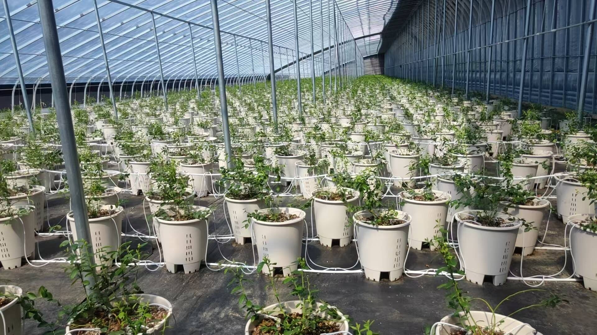
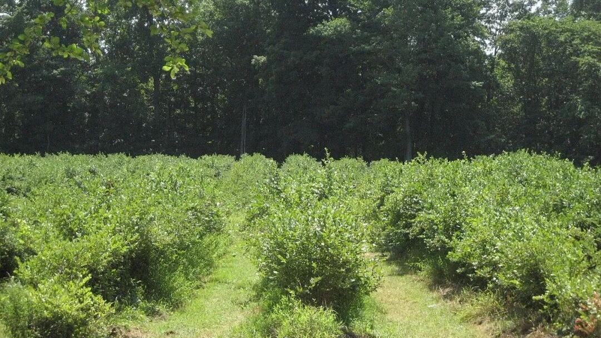
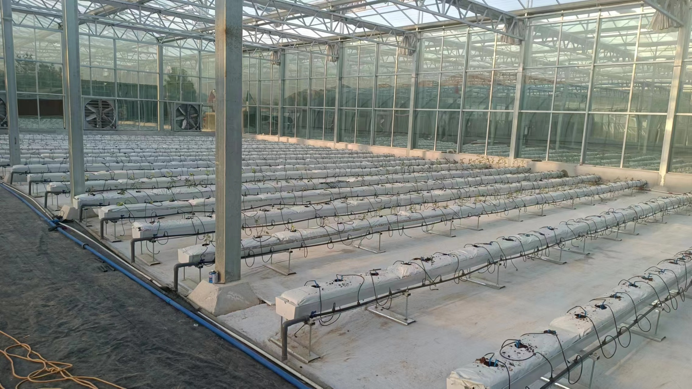
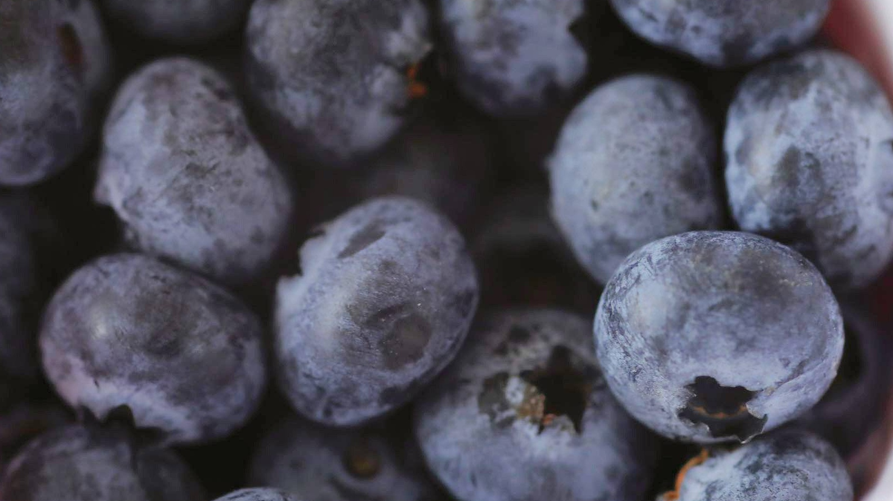
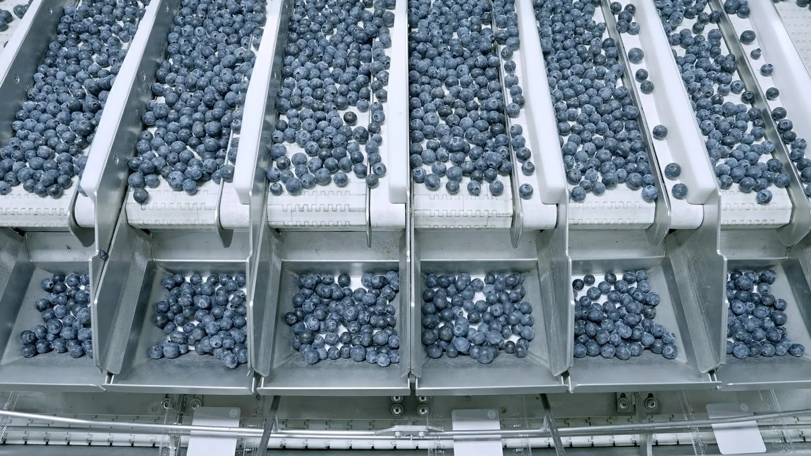
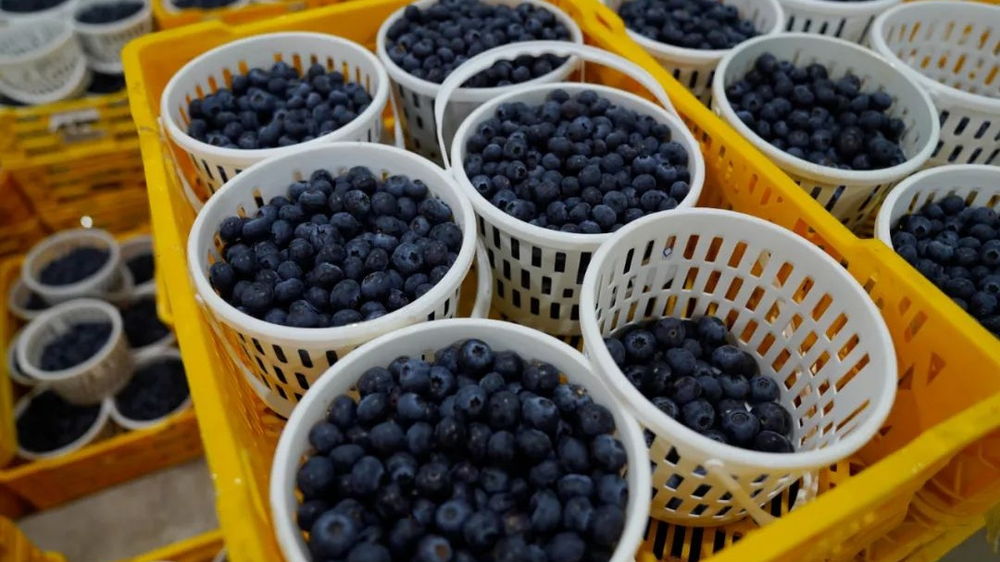
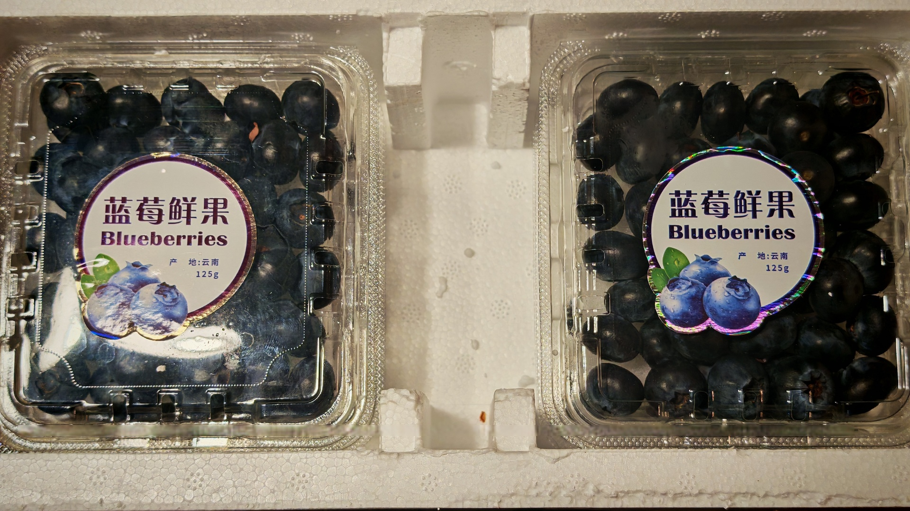
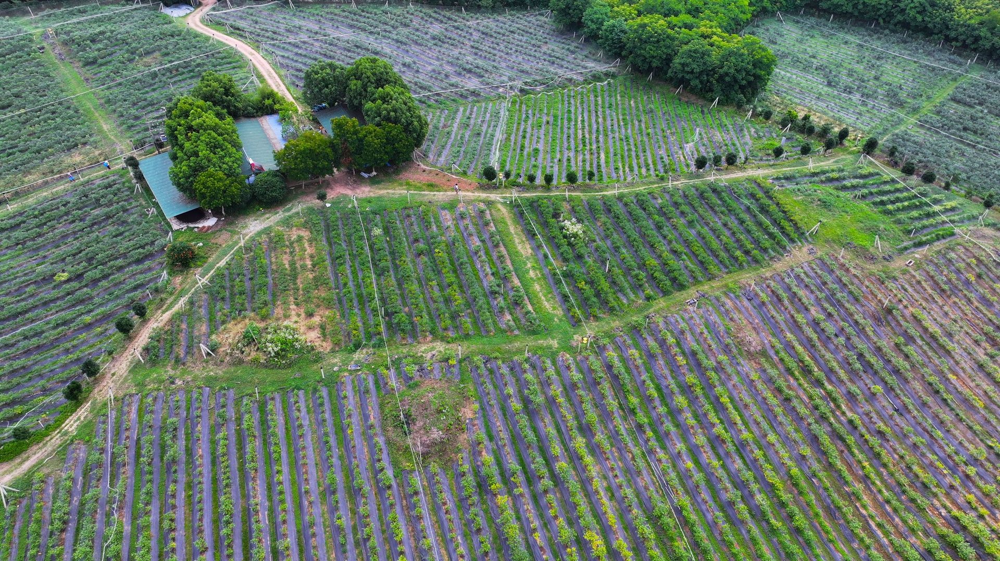

2026年初夏，一线城市精品超市货架上的蓝莓打出了令人咋舌的价格：125克盒装小果降至9.9元到16元，折合每公斤不过几十元，社交平台上“蓝莓自由”的词条频频冲上热搜。狂欢的另一侧，是冷酷的产业洗牌。据国家统计数据，全国蓝莓种植面积已突破150万亩，年产量稳步迈过100万吨门槛，稳居全球第一大蓝莓生产国。但在主产区地头，大量缺乏冷链与分级能力的散户果农正遭遇收购价腰斩——除去每公斤6到8元的人工手采费与包装箱成本，到手所剩无几。

现代设施大棚内成排布置的基质栽培盆与精准滴灌供水管网核心底账与逻辑
走进连锁精品超市冷柜，标价16元甚至9.9元的促销蓝莓，果径普遍在12至14毫米之间。在商超采销账本上，这类小果属于分选机淘汰的次级通货，进货成本每盒不足5元，承担着吸引客流的引流任务。
真正支撑专柜高额利润的，是货架上层果径超18毫米的特大果礼盒，单盒售价依旧坚挺在40元至60元高位。货架两端的温差，折射出上游种植端的极端分化：不同标准与周期的浆果，活在平行的两个世界里。

传统露地土壤栽培模式下的成排蓝莓灌木丛近三年产业资本在云南砸下的基质设施投资已超40亿元，现代化温室高速连片扩建。而在北方传统露地产区，大量土培散户却遭遇收购价腰斩，面对不足15元的地头价，部分果农面对人工成本被迫弃采离场。
| 亩均投入 | 露地土壤 2~3 万元 | 设施基质 10~15 万元 |
| 丰产周期 | 露地需 3~4 年定植 | 基质 8~12 个月速生 |
| 大果比例 | 15mm以上仅 30%~40% | 18mm以上稳定 85% |
| 上市窗口 | 6~7月集中撞车 | 11月至翌年4月错峰 |
传统土培蓝莓有着天然生理瓶颈：根系全为无根毛的纤细吸收根，要求土壤pH值严格在4.5至5.5之间。北方农户每亩填埋数吨硫磺粉改良黏土，但遇到暴雨积水极易沤根，定植三至四年才能挂果丰产。
云南主推的基质栽培则是一场现代工业重构。蓝莓栽植于数十升控根容器中，填装进口脱盐椰糠与泥炭。智能水肥机配合微型滴箭，每天以微频次注入精准调配的营养液，使蓝莓当年定植当年丰产。

智能连栋温室内架设的高架基质栽培槽与双箭头滴灌管路这种工厂化制造彻底阻断了土传病害与杂草争肥的风险。计算机精确控制水肥，让鲜果在糖度与单果规格上具备极高的工业均一性，对传统粗放农耕形成了降维打击。
在生鲜商业中，时间的价值远超单纯产量。云南高原冬春光照充沛，配合双层大棚控温与低需冷量品种，采收期从每年11月中旬持续至次年5月。此时恰逢南美海运尾期，全国市场出现长达半年的鲜果真空期。
在这一独家窗口期内，刚从枝头采下的云南优质蓝莓，地头收购价高达每公斤120元至160元。进场投资大棚的产业资本，看中的正是这半年的超额溢价红利——抢跑一个早春产季，便能收回近半硬件投资。

采摘收集后表层完整保留天然均匀白色果粉的成熟蓝莓鲜果然而入夏进入6月与7月，辽宁、山东等地数百万亩露地蓝莓集中成熟。露天浆果极不耐储，果农必须两周内采完，海量鲜果撞车冲击批发市场。地头价断崖式跌落至每公斤15元至25元，散户陷入残酷踩踏。
| 120~160 早春抢跑期（11月~3月） 云南温室独家窗口期，空运直供一线精品商超 | 50~80 温室过渡期（4月~5月） 北方暖棚蓝莓上市，货架价格平稳回落 | 15~25 露地集中期（6月~7月） 全国露天集中成熟，地头价触及采摘成本线 |
在现代浆果供应链中，蓝莓是被光学设备精确量化的工业品。果皮表面均匀的天然白色蜡质果粉，是抵御病菌与失水氧化的天然屏障，更是新鲜采摘的核心指征。传统人工分选极易抹除果粉，导致鲜果沦为次级品。
现代集采中心内，自动化光学分选机通过高速相机与激光扫描，在毫秒内测算翻滚果实的果径、果粉覆盖率与硬度。气阀精准将12至14毫米小果分流至平价通道，将18毫米以上特大果装入高端礼盒。

自动化光学分级机通道内按照果径与成熟度分流的蓝莓输送槽机器分选彻底改变了产业链价值分配逻辑。在实际运作中，缺乏分选设备的散户只能按斤贱卖通货，而拥有光学分选产线的供应链龙头，通过把通货重构为规格级商品，切走了整条链条中最丰厚的溢价。
蓝莓皮薄多汁且采后呼吸旺盛，常温下24小时内内部糖酸迅速降解，极易软化霉变。现代基地恪守两小时进库、四小时果心降温的铁律。缺乏冷链设施的产区，失去对温度的控制就意味着彻底丧失远距离销售权。
田头压差预冷系统在货架两侧建立强大气压差，迫使零度强冷风穿透果筐缝隙，两小时内将果心温度由28度拉降至2度完成休眠。随后由温控冷链车或航空货运在48小时内投放一线商超前置仓。

田头气调冷库内整齐码放等待进行压差预冷作业的采收周转框这种全封闭冷链网络的造价极其昂贵，单条干线冷链物流费折合每公斤高达8至12元。高昂的冷链壁垒，将缺乏资金的农村合作社阻隔在外，迫使他们只能依赖本地短途批发商被动交易。
千亿产业链条中，各方凭借不同壁垒分配利润。顶端的跨国育种巨头通过专利种苗费、品种授权费与渠道抽成，稳固抽取整个产业20%至30%的净利润底盘。这些专利品种具备高糖脆甜且果粉不易脱落的特质。
中游设施运营商与冷链企业凭借标准化重资产，在早春高价窗口期赚取超40%的确定性毛利。下游终端商超把控销售渠道，维持25%至35%毛利率的同时，通过合同条款将终端货损风险向上转嫁。

产地直发冷链运抵终端货架的125克透明保鲜盒成品包装最终承担全部价格跌幅与腐烂货损的，是处于最底层的土培散户。商超冷柜里的蓝莓永远是一样的深蓝，但装盒前每一公里的损耗与账单，都由没有议价权的散户在集中上市期被动承担。
每亩10万至15万元的设施基质大棚仍在加速扩建，但高额硬件投入背后是沉重的折旧摊销。若按五年折旧计算，每亩每年仅固定资产摊销即达两万余元，极度依赖早春每公斤80元以上的超额溢价来平衡。
一旦设施产能全面释放，早春供应窗口终将被填平。从阳光玫瑰到高端蓝莓，农业从来不存在永久享受暴利的商业神话。当资本退潮与时空溢价缩水，重资产基地同样将卷入严酷的成本竞争。

云南高原产业园区内成片规划建设的高标准现代蓝莓生产基地在产业界看来，唯有严守单位经济模型、掌握优质品种并建立稳健冷链的从业者，才能在泡沫出清后真正立足于实体产业长跑舞台。一场关于单位成本与抗风险能力的残酷大考才刚刚拉开序幕。
微观经济常识
高附加值浆果的资本狂欢，本质是对早春时间窗口与技术代差的超额套利。当全天候设施产能全面兑现，暴利终将回归微利，唯有精细化单产模型与稳健冷链才能在洗牌中立足。